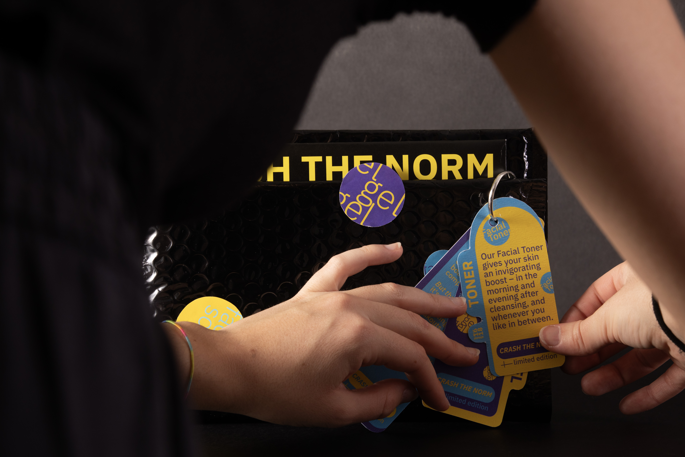
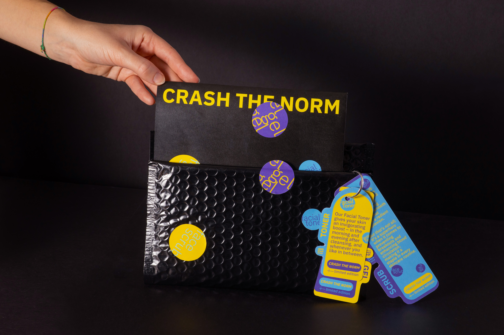

The project reinterprets skincare branding through a rebellious, youth-oriented visual language. Built around the idea of "CRASH THE NORM", the concept uses layered information and sticker-like compositions inspired by posters and social media visuals to move away from the clean and sterile aesthetics of traditional beauty brands.
Consultant:
Adrienn Császár, Nóra Kaszanyi
Category:
Packaging Design
Year:
2024